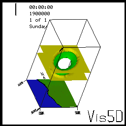
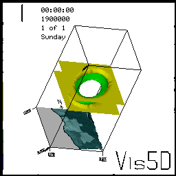

Vis5d+ is a free OpenGL-based volumetric rendering program for scientific data sets in 3+ dimensions. Vis5d must be installed to run the following examples.

Create Vis5d topo and map data from GRASS data.
Display the data with Vis5d.g.region rast=topo.
r.out.v5d.topo input=topo. output=topo.topo
v.out.v5d.map input=coastlines output=coastlines.map
vis5d -topo $PWD/topo.topo -map $PWD/coastlines.map hole.v5dTo see the new data, press the TOPO and MAP buttons in the control panel and press SFC in the popup. To duplicate this view, press eps under Isosurf and set it to 6, press h.b01.z under Isosurf and set it to 3, press REVERSE, then rotate the image in the display window by using the mouse.
Create Vis5d texture data from GRASS data.
Display the data with Vis5d.g.region rast=nations
g.region.v5d -r hole.v5d
r.out.v5d.texture nations
vis5d -texture $PWD/nations.sgi hole.v5dTo see the new data, press the TEXTURE button in the control panel. To duplicate this view, follow the directions in the example above.